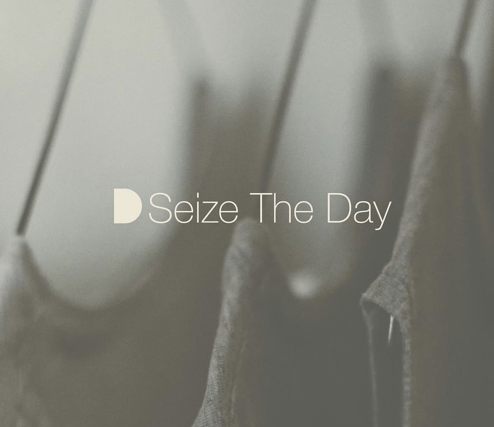
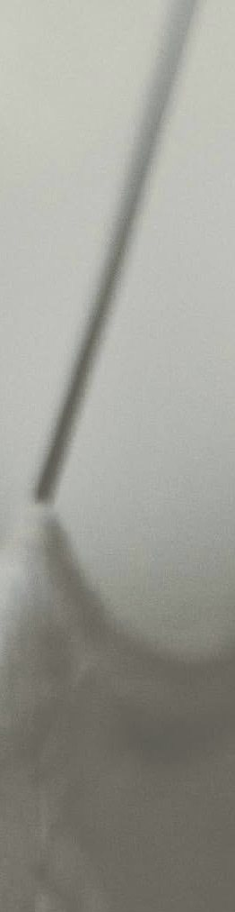
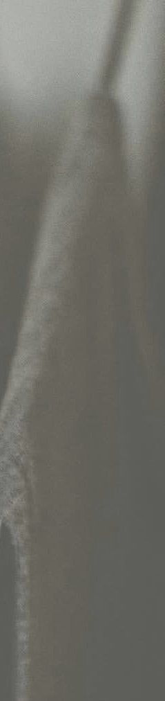
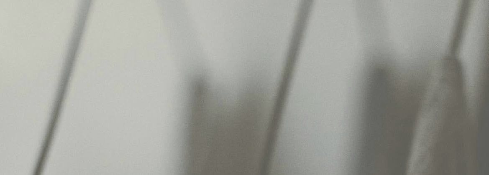
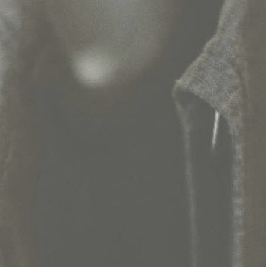

You Din
دینا یوسفی — طراحی لباس
ادامهیک اسم، تا خورده در یک کلمه
Yousefi
Dina
= YouDin
یودین نام دینا یوسفی است، تا خورده در یک کلمه. در دل حرف D حرف دیگری پنهان است: «د»، حرف اول دینا. یک نشانه، به دو زبان.

Seize The Day
لباسهایی که با حوصله بریده میشوند، برای روزهایی که ارزش ماندن دارند.
هر لباس از پارچه شروع میشود: وزنش، افتادنش، و نوری که رویش مینشیند.
کالکشن ۰۱
یادداشتهای پاییز
عکسها و نامها نمونهاند و با کارهای واقعی جایگزین میشوند.




آتلیه
وقت پرو رزرو کنید
پرو فقط با وقت قبلی است. روزش را بگویید تا لباسها را آماده کنیم.
درخواست وقت